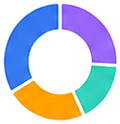

マンガ・読書記録アプリ【無料】記録・管理アプリは、AppADayCreatorが提供する完全無料の管理・計画ツールです。登録・ログイン不要で、すぐにご利用いただけます。
このツールでできること
読んだ漫画の作品名・巻数・評価・感想を記録・管理できます。未読リストの作成や読了済みの整理、シリーズ別の進捗管理など、本棚管理をデジタルで行えます。
活用シーン・使い方
長期連載漫画のどこまで読んだか管理や、友人へのおすすめ記録として活用できます。図書館での借り漏れ防止や、定期購読作品の発売スケジュール管理にも役立ちます。
注意点・補足
データはブラウザのローカルストレージに保存されます。大量のデータは定期的にエクスポートして保管することをおすすめします。
学習・語学の効果と習慣データ
文部科学省・研究機関のデータをもとに、効果的な学習方法と習慣化のポイントを整理しました。
| 項目 | データ | 出典 |
|---|---|---|
| 英語習熟度（EF EPI）日本の順位 | EF EPI 2023年：世界87位（87カ国中） | Education First「EFEnglish Proficiency Index 2023」 |
| 社会人の学習時間（1日平均） | 約6分（学習している人の平均：約60分） | 総務省「社会生活基本調査」2021年 |
| スキルアップで給与上昇した割合 | 資格取得後に年収増加を実感：約40% | 複数の転職・スキルアップ調査から参考値 |
| 習慣化に必要な平均日数 | 約66日（21日は最低ライン） | Phillippa Lally et al. (2010) European Journal of Social Psychology |
⚠️ 計算結果の活用にあたって
📕 記録を追加
🎯 目標設定
📋 記録一覧
まだ記録がありません
📊 サマリー
📈 月別読了数
🏷️ ジャンル分布
⭐ 評価分布
スマホ完読管理を支える機能
記録・目標・分析がひとつに。読書習慣を無理なく続けられます。
かんたん記録
タイトル・ジャンル・評価・読了状況をワンタップで登録。バーコード感覚でサッと積読も管理。
目標達成度
月間・年間の読了目標を設定し、プログレスバーで達成度をリアルタイムに可視化します。

ジャンル分析
ドーナツグラフでジャンル別の読書傾向を分析。偏りや好みの変化が一目でわかります。
月別トレンド
月別読了数を棒グラフで表示。読書ペースの推移を振り返り、習慣化に役立てられます。
ストリーク習慣化
継続記録で読書を習慣に。完読率トラッキングでモチベーションを維持できます。
シェア＆比較
読了状況をSNSでシェア。友人と読書記録を比べ合って、読書をもっと楽しく続けられます。
こんなシーンで役立ちます
通勤・スキマ時間に
読み終えた巻をその場で記録。どこまで読んだかを忘れず、続巻もスムーズに。
おうち読書の管理に
積読の山を可視化。読みたい本・読書中・読了をステータスで整理できます。
目標達成を楽しむ
月間・年間の目標を立てて達成度をチェック。読書のモチベーションが続きます。
記録から見つかるおすすめ作品
あなたの読書傾向をもとに、次に読みたい一冊が見つかります。
話題の連載マンガ
人気の長編小説
注目のビジネス書
定番の実用書
受賞作セレクト
新刊ピックアップ
名作再読リスト
みんなのおすすめ
🔗 関連サービス
📖 使い方
- 記録したい項目を入力フォームに入力する
- 「追加」または「記録」ボタンをクリックする
- 記録一覧で過去のデータを確認する
- グラフや集計で傾向を把握する
- 継続的に記録して変化を追跡する
❓ よくある質問
Q: 記録データはどこに保存されますか？
A: ご使用のブラウザのローカルストレージに保存されます。他のデバイスとは共有されません。
Q: ブラウザを閉じても記録は残りますか？
A: はい、同じブラウザを使う限りデータは保持されます。
Q: 記録を削除するにはどうすればいいですか？
A: リセットボタン、またはブラウザのサイトデータをクリアすることで削除できます。
⚠️ 本ツールの結果は参考情報です。専門的判断は資格を持つ専門家にご相談ください。
📋 このツールの詳細
本記録ツールは、マンガ・読書記録アプリ記録・管理アプリを手軽に利用できる無料Webサービスです。登録不要でブラウザから直接ご利用いただけます。
よくある質問
- Q: マンガ読書記録をつけるメリットは何ですか？
- 読んだマンガを記録することで「積読の量を把握する」「お気に入り作品を見返しやすくなる」「読書ペースや読了数を確認できる」などのメリットがあります。特にシリーズものが多いマンガでは「どこまで読んだか」を記録しておくことで、続刊が出た際に前回の内容を確認しやすくなります。記録が習慣になると、読書の質と量の両面でマンガライフを豊かにできます。
- Q: 電子書籍と紙の書籍、どちらの管理に向いていますか？
- 本ツールは電子書籍・紙の書籍どちらの記録にも対応しています。電子書籍はKindleや各サービスでの購入履歴がありますが、サービスをまたいで管理するには本ツールのような独立した記録が役立ちます。紙の書籍は棚を見れば把握できますが、シリーズの何巻まで持っているかや読了状況を一元管理するには記録ツールが便利です。どちらの場合も「タイトル・作者・巻数・読了状況」を入力するだけで管理できます。
- Q: 記録したデータのバックアップはできますか？
- データはブラウザのローカルストレージに保存されます。ブラウザのキャッシュクリアや端末変更でデータが消える可能性があるため、重要なデータは定期的にエクスポート・メモ帳などへのコピーで手動バックアップをおすすめします。同じブラウザ・同じ端末であれば次回アクセス時にも記録は保持されます。外部サーバーへのデータ送信は一切行っておらず、プライバシーは完全に保護されます。
漫画・読書の楽しみ方とコレクション管理のコツ
漫画は日本の重要な文化の一つです。読んだ作品を記録・管理することで、新たな作品との出会いや読書習慣の継続に役立ちます。本ツールを活用して読書記録を始めましょう。
- 日本の漫画市場規模：2023年には電子書籍を含め約6,900億円（出版科学研究所）
- 電子漫画の普及により「積ん読」問題が増加（アプリ内の未読作品管理が重要になっている）
- 漫画アプリ・サービス：Kindle・コミックシーモア・ピッコマ等多数が存在する
Q. 読んだ漫画を効率よく管理するためのコツを教えてください。
A. 漫画コレクションの管理術として「読書管理アプリを活用する：「読書メーター」「Bookmeter」「ブクログ」等のサービスでバーコードスキャンで簡単に登録できる」「電子書籍は購入サービスのライブラリを活用する（ただし異なるサービスに分散すると管理が大変になるため、1〜2サービスに集約する方が管理しやすい）」「評価・感想を簡単にメモしておく（後で再読したいか・友人に薦められるかの判断基準になる）」「シリーズ物は最新巻・購入済み巻を把握しておく（続巻の見落とし防止）」があります。
Q. 漫画の新刊情報を効率よくチェックするには？
A. 新刊・続巻情報の確認方法として「出版社の公式サイト・SNSのフォロー：集英社・講談社・小学館等の公式Xアカウントは新刊情報を発信している」「漫画アプリの「お気に入り登録」機能：多くのアプリで新刊通知機能がある」「Amazonや各電子書籍サービスの「マイシリーズ」機能：自動で新刊通知を受け取れる」「読書管理アプリのウォッチリスト機能：「読書メーター」等で「読みたい本」に登録すると発売情報が届く」があります。お気に入りの作家・シリーズは複数の通知手段を組み合わせると見落としを防げます。
Q. 漫画の選び方・おすすめの探し方を教えてください。
A. 自分に合った漫画の見つけ方として「読書管理アプリのレコメンド：読んだ作品から似た傾向の漫画を提案してくれる機能が充実している」「ランキング・受賞作：「マンガ大賞」「このマンガがすごい！」等は信頼できる外部評価」「SNSのバズり漫画：X（旧Twitter）・InstagramでのUGC（口コミ投稿）は同じ趣味の人の生の評価がわかる」「試し読みを活用する：電子書籍サービスでは多くの作品が試し読み可能なため購入前に確認できる」「友人・知人のおすすめ：信頼できる相手のおすすめは趣味の近さが保証されるため外れが少ない」があります。